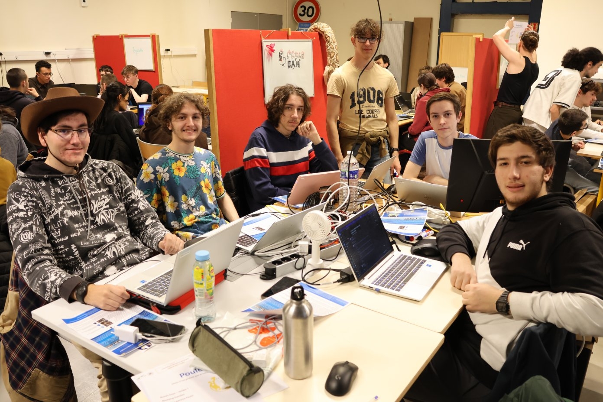
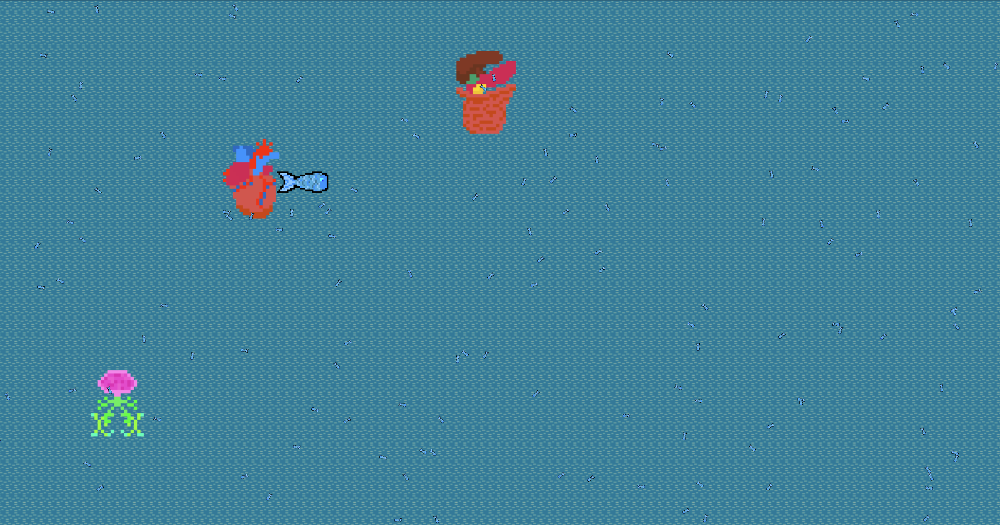
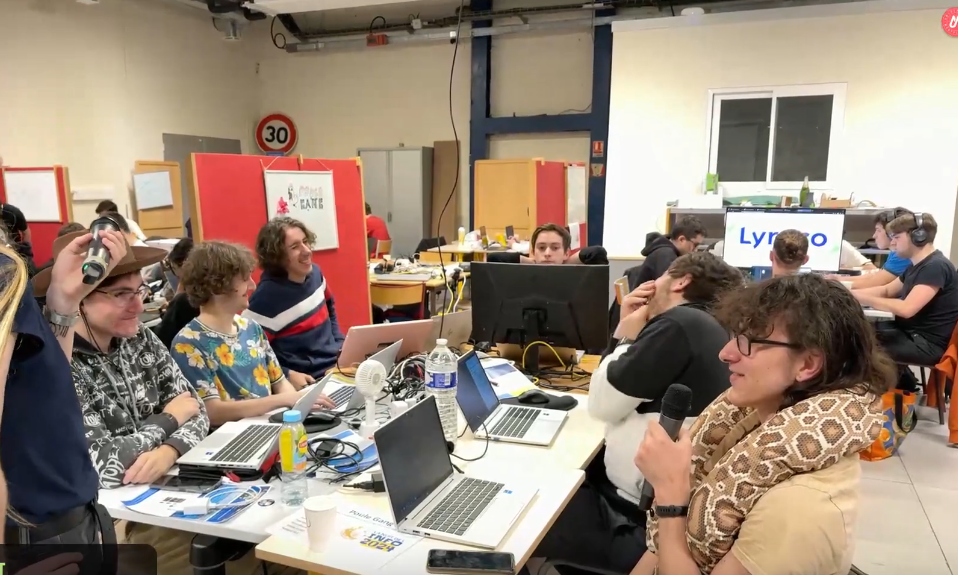

~/$ cat Nuit_de_l_info.md
Dormir ? ahah, ça faisait longtemps qu'on me l'avais pas faite celle là.
La nuit de l'info est un événement national de développement web sur une nuit (16h-8h), fait en collaboration avec des entreprise dans le secteur de l'Informatique. Le but est de créer un site web sur un thème annoncé au démarrage, en une nuit, en équipe de 2 à 10.
L'équipe dans laquelle je me suis retrouvé (je dit ça comme si je ne l'avais pas choisi ahah) se constituait de moi et 5 potes, et le thème principal annoncé par une association, avait été celui du "lien entre l'écosystème marin et le corps humain".
Quelque chose d'important à propos de la nuit de l'info, est qu'il fallait choisir au moins 2 défis en plus du défi principal, et l'un d'eux impliquait un gros travail de graphisme, mais nous n'avions qu'un seul dans notre équipe.
Comme vous pouvez peut-être le deviner au fait que sur la photo, je suis debout, des feutres à la main, devant un tableau où est dessiné une poule agressive et le nom de notre équipe en lettres stylisées, ce seul graphiste de l'équipe, c'était moi.
Autant dire que je n'ai pas fait beaucoup de développement, en dehors d'un peu de CSS.
Malgré ceci et quelque légers problèmes d'ambiance qui sont assez difficile à éviter lorsque l'on doit travailler en équipe durant toute une nuit, je ne regrette vraiment pas d'avoir participé à ce projet, même si je mentirais en disant qu'il m'a apporté quoi que ce soit, en dehors d'un bon moment avec des gens sympas et de très bons souvenirs.
Médailles et prix gagnés par notre équipe :
- absolument aucune,
- oui,
- c'est
- extrêmement
- triste,
- mais
- bon
- on
- s'y
- attendait
- un
- peu
- Prenom : Yann
- Nom : Bodiguel
- > About me
- - - - - - - - - - - - - - - - -
- Compétences :
- > Java
- > WEB
- > SQL
- - - - - - - - - - - - - - - - -
- Projets :
- > SAE Trains
- > SAE 3eme Année
- > Nuit de l'Info